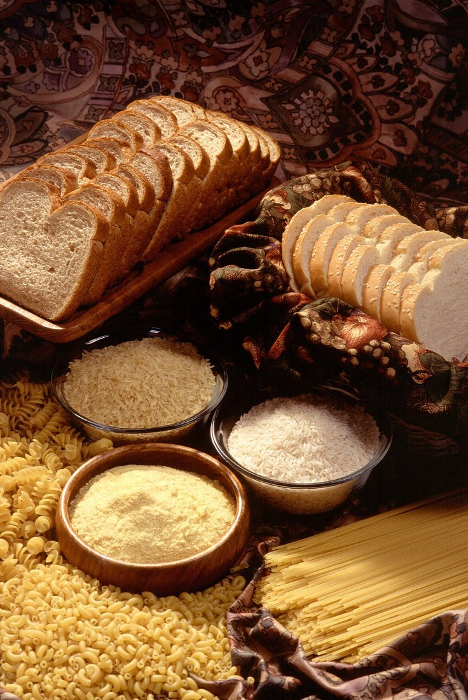
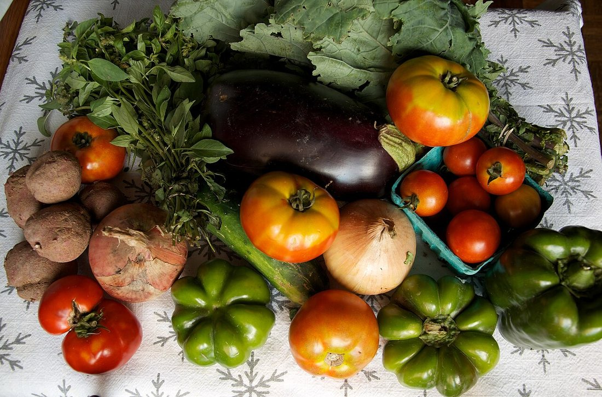
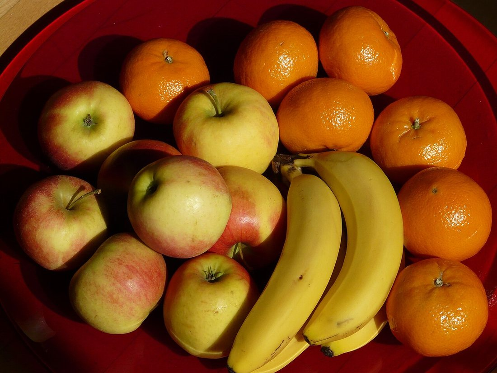
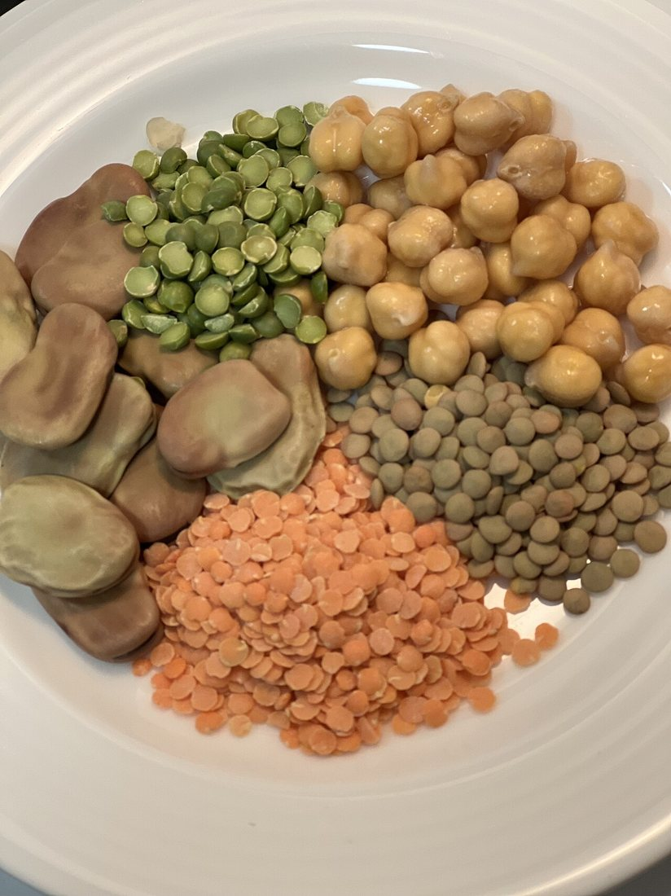
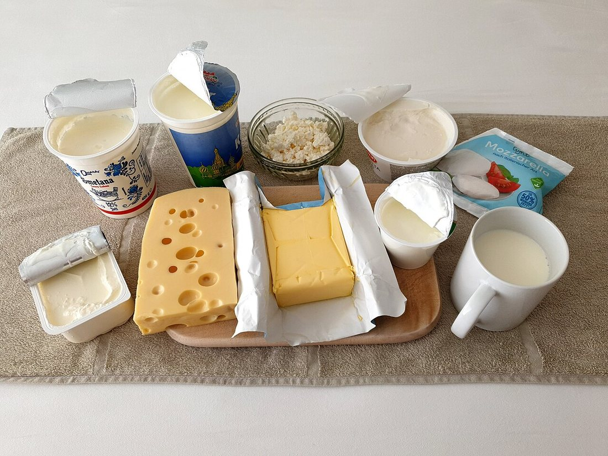
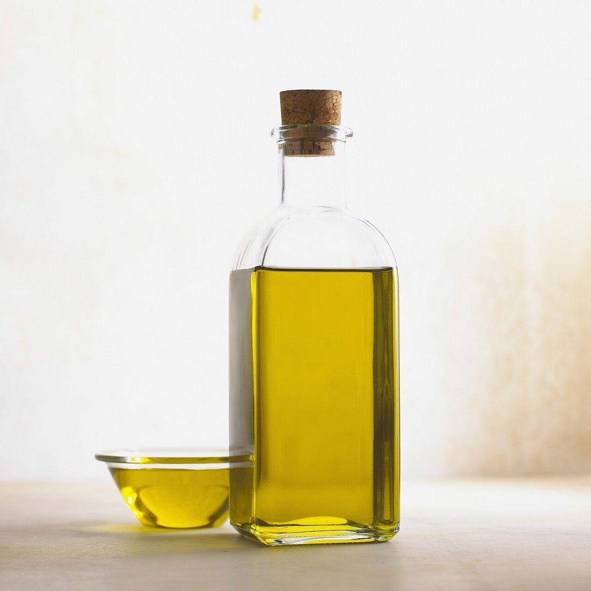
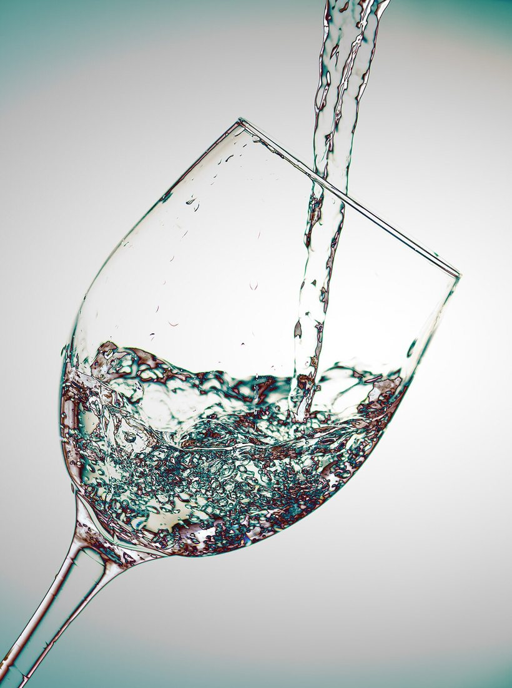
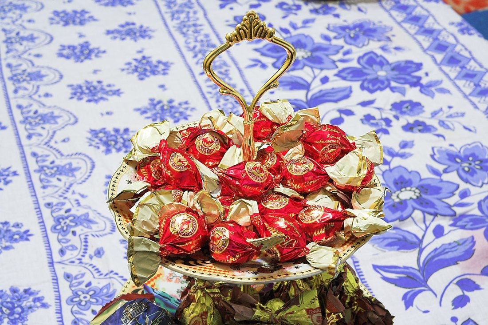

Көркем еңбек · Тағамтану · Денсаулық Art & Craft · Food & Nutrition · Health Художественный труд · Кулинария · Здоровье
🥗 Дұрыс тамақтану және тағам пирамидасы
🥗 Healthy Eating & the Food Pyramid
🥗 Здоровое питание и пищевая пирамида
Не көп, не аз жейміз? Пирамида күн сайынғы тарелкеңді теңгеруге көмектеседі. What to eat more of, and what less? The pyramid helps you balance your daily plate. Чего есть больше, а чего меньше? Пирамида помогает уравновесить твою тарелку.
Дұрыс тамақтану — ағзаға керекті заттарды (нәруыз, май, көмірсу, дәрумен, минерал, су) дұрыс мөлшерде беретін тамақтану. Оның үш алтын ережесі бар: тепе-теңдік (керегінше энергия), әртүрлілік (түрлі тағам — түрлі дәрумен) және мөлшер сақтау (артық жемеу). Жасөспірім ағза өсіп жатқандықтан, оған әсіресе сапалы тамақ, таза су және тұрақты тәртіп қажет. Healthy eating means giving the body the right amounts of what it needs — proteins, fats, carbohydrates, vitamins, minerals and water. It has three golden rules: balance (the right amount of energy), variety (different foods give different vitamins) and moderation (not too much). A growing teenage body especially needs good food, clean water and a regular routine. Здоровое питание — это питание, которое даёт организму нужные вещества (белки, жиры, углеводы, витамины, минералы и воду) в правильном количестве. У него три золотых правила: баланс (столько энергии, сколько нужно), разнообразие (разная еда — разные витамины) и умеренность (не переедать). Растущему организму подростка особенно нужны качественная еда, чистая вода и режим.
Тағам пирамидасы The Food Pyramid Пищевая пирамида
Пирамида қарапайым ережені көрсетеді: табаны кең тағамды көбірек, ұшындағысын азырақ жейміз.The pyramid shows a simple rule: eat more of the foods at the wide base, and less of those at the narrow tip.Пирамида показывает простое правило: продуктов у широкого основания едим больше, а у вершины — меньше.
Табан: су және қозғалыс.Base: water & movement.Основание: вода и движение. Күніне 6–8 стақан су, белсенді қимыл.6–8 glasses of water a day and an active lifestyle.6–8 стаканов воды в день и активность.
Дәнді тағам.Grains.Зерновые. Нан, жарма, макарон — басты энергия көзі.Bread, cereals, pasta — the main source of energy.Хлеб, крупы, макароны — главный источник энергии.
Көкөніс пен жеміс.Vegetables & fruit.Овощи и фрукты. Дәрумендер мен талшық — күніне 5 рет.Vitamins and fibre — five portions a day.Витамины и клетчатка — 5 порций в день.
Нәруыз бен сүт.Protein & dairy.Белки и молочное. Ет, балық, жұмыртқа, бұршақ, сүт — өсу үшін.Meat, fish, eggs, beans, milk — for growth.Мясо, рыба, яйца, бобовые, молоко — для роста.
Ұшы: майлар мен тәттілер.Tip: fats & sweets.Вершина: жиры и сладости. Ең аз мөлшерде, мерекелік тағам ретінде.The smallest amount — as an occasional treat.В наименьшем количестве, как лакомство.
Тағам топтары: ағзаға не береді? Food groups: what do they give? Группы продуктов: что они дают?
🔍 Үлкейту үшін суретті басыңыз. 🔍 Tap a photo to enlarge it. 🔍 Нажмите на фото, чтобы увеличить.

Дәнді тағамGrainsЗерновые
Күн бойы жұмыс істеуге қуат береді. Тұтас дәнді нан пайдалырақ.They fuel the whole day. Wholegrain bread is the healthiest choice.Дают силы на весь день. Полезнее цельнозерновой хлеб.

КөкөністерVegetablesОвощи
Ас қорытуды жақсартады, иммунитетті нығайтады. Жартысы шикі болсын.They aid digestion and strengthen immunity. Eat half of them raw.Улучшают пищеварение и иммунитет. Половину ешь сырыми.

ЖемістерFruitФрукты
Тәттіге дұрыс балама. Шырынның орнына тұтас жемісті жеген жөн.A healthy swap for sweets. Whole fruit beats juice.Полезная замена сладостям. Целый фрукт лучше сока.

Нәруызды тағамProtein foodsБелковые продукты
Ет, балық, жұмыртқа, бұршақ дақылдары бұлшықет пен жасушаны құрайды.Meat, fish, eggs and legumes build muscle and cells.Мясо, рыба, яйца и бобовые строят мышцы и клетки.

Сүт өнімдеріDairyМолочные продукты
Сүт, айран, ірімшік сүйекті бекітеді. Жасөспірімге аса маңызды.Milk, yogurt and cheese strengthen bones — vital for teenagers.Молоко, кефир, сыр укрепляют кости. Важны для подростков.

Майлар мен өсімдік майыFats & oilsЖиры и масла
Өсімдік майы пайдалырақ. Маймен абай болу керек — олар калорияға бай.Vegetable oils are healthier. Use sparingly — fats are high in calories.Полезнее растительные масла. Их немного — жиры калорийны.

💧 Су — өмірдің негізіWater — the basis of lifeВода — основа жизни
Дене салмағының 60%-ы — су. Ол қоректі заттарды тасымалдайды, дене қызуын реттейді. Күніне 6–8 стақан таза су ішкен дұрыс; тәтті газдалған сусындарды судың орнына қоюға болмайды.About 60% of the body is water. It carries nutrients and controls temperature. Drink 6–8 glasses of clean water a day; sugary fizzy drinks are no substitute for water.Тело на 60% состоит из воды. Она переносит питательные вещества и регулирует температуру. Пей 6–8 стаканов чистой воды в день; сладкая газировка воду не заменяет.

🍬 Тәттілер — сирек әрі азSweets — rarely and littleСладости — редко и мало
Кәмпит, торт, газдалған сусын — пирамиданың ұшында. Олар тез энергия береді, бірақ дәруменсіз «бос калория» әрі тісті бұзады. Тәттінің орнына жеміс не құрғақ жеміс таңдау пайдалы.Candy, cake and soda sit at the very tip. They give quick energy but are "empty calories" with no vitamins, and they harm teeth. Choose fruit or dried fruit instead.Конфеты, торт, газировка — на самой вершине. Они дают быструю энергию, но это «пустые калории» без витаминов, к тому же вредят зубам. Лучше выбрать фрукт или сухофрукты.
«Дұрыс тарелке» ережесі The "Healthy Plate" rule Правило «здоровой тарелки»
Әр тамақты осылай елестетіңіз — қалькулятор қажет емес:Picture each meal like this — no calculator needed:Представь каждый приём пищи так — без всякого калькулятора:
½ — тарелкенің жартысы — көкөніс пен жеміс.half the plate is vegetables and fruit.половина тарелки — овощи и фрукты.
¼ — ширегі — дәнді тағам (нан, күріш, қарақұмық).a quarter is grains (bread, rice, buckwheat).четверть — злаки (хлеб, рис, гречка).
¼ — ширегі — нәруыз (ет, балық, жұмыртқа, бұршақ).a quarter is protein (meat, fish, eggs, beans).четверть — белок (мясо, рыба, яйца, бобовые).
🥛 Қосымша: бір стақан су немесе айран, ал тәтті ретінде — жеміс.Add a glass of water or yogurt, and fruit for dessert.Дополни стаканом воды или кефира, а на десерт — фрукт.
Дұрыс тамақтанудың 6 ережесі 6 rules of healthy eating 6 правил здорового питания
Таңғы асты өткізбеNever skip breakfastНе пропускай завтрак
Таңғы ас — күннің энергиясы. Бұл оқуға зейін береді.Breakfast is the day's energy and helps you focus at school.Завтрак — энергия дня, помогает сосредоточиться на учёбе.
Тәртіппен жеEat on a scheduleЕшь по режиму
Күніне 4–5 рет, шамамен бір уақытта. Асықпай шайна.4–5 times a day at regular hours. Chew slowly.4–5 раз в день в одно время. Жуй не спеша.
Әртүрлі жеEat the rainbowЕшь разнообразно
Түрлі-түсті көкөніс пен жеміс — түрлі дәрумен.Different-coloured fruit and veg give different vitamins.Разноцветные овощи и фрукты — разные витамины.
Тұз бен қантты азайтCut salt & sugarМеньше соли и сахара
Артық тұз бен қант денсаулыққа зиян. Газдалған сусыннан бас тарт.Too much salt and sugar harm health. Skip the soda.Избыток соли и сахара вреден. Откажись от газировки.
Су ішDrink waterПей воду
Күніне 6–8 стақан таза су — шырынның орнына.6–8 glasses of clean water a day, instead of juice.6–8 стаканов чистой воды в день вместо соков.
Дұрыс әзірлеCook it rightГотовь правильно
Қуырғаннан гөрі буға пісір, қайнат, пеште пісір.Steam, boil or bake rather than deep-fry.Лучше варить, тушить, запекать, чем жарить во фритюре.
💡 Есте сақта 💡 Remember 💡 Запомните
Денсаулықты тарелкеден бастайды. Пирамиданың табанындағы тағамды көп, ұшындағысын аз жеп, түрлі тағаммен теңгерсең — ағзаң өсуге, оқуға және қозғалуға қажет бәрін алады. Дұрыс тамақтан — белсенді бол! Health starts on your plate. Eat more from the base of the pyramid and less from the tip, keep your meals varied and balanced — and your body gets everything it needs to grow, study and move. Eat well — stay active! Здоровье начинается с тарелки. Ешь больше из основания пирамиды и меньше с её вершины, держи питание разнообразным и сбалансированным — и организм получит всё, что нужно для роста, учёбы и движения. Питайся правильно — будь активной!